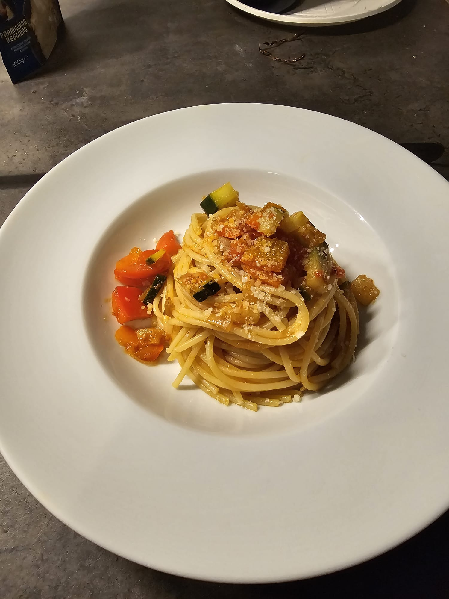

Pasta con Zucchine e Peperoni

Ingredienti
- 100g di pasta
- 100g di passata di pomodoro
- 70g di zucchine
- 70g di peperoni
- Olio extravergine d'oliva q.b.
- Sale q.b.
- Pepe q.b.
- Formaggio grattugiato (facoltativo)
Procedimento
- Taglia le zucchine e i peperoni a dadini e falli rosolare in padella con un filo d'olio fino a che saranno leggermente morbidi.
- Aggiungi la passata di pomodoro in padella con le verdure, sala e pepa, e cuoci a fuoco medio per circa 10 minuti.
- Cuoci la pasta in abbondante acqua salata.
- Scola la pasta al dente e trasferiscila direttamente nella padella con il sugo di verdure e pomodoro.
- Mescola bene e, se serve, aggiungi un po’ di acqua di cottura della pasta per amalgamare.
- Lascia insaporire per un paio di minuti a fuoco basso.
- Impiatta e, se vuoi, aggiungi formaggio grattugiato prima di servire.